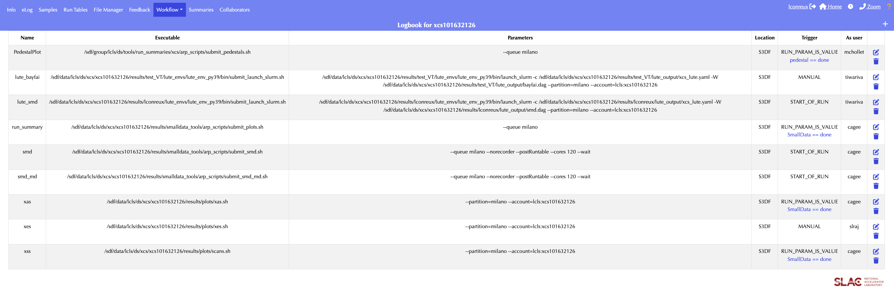
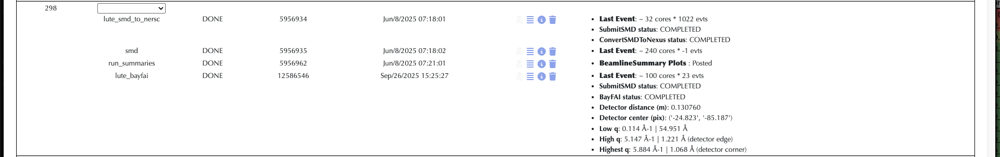
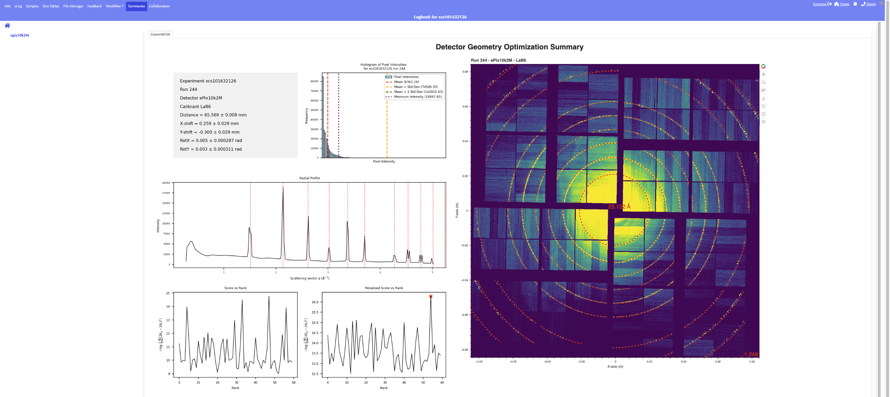

Running BayFAI
OverviewSetting up BayFAIGetting the Calibration PowderBayFAI ParametersBayFAI HyperparametersMPI ranks and ConvergenceMEC 4 Quads particularityRunning BayFAI from the eLogTo go further: Azimuthal Integration after BayFAI
Overview
BayFAI calibrates the detector geometry (dist, poni1, poni2, rot1, rot2, rot3) from a powder image of a known calibrant (AgBh, LaB6, CeO2...). It couples pyFAI geometry refinement with Bayesian Optimization (BO) to search for the geometry that best fits the calibrant rings.
The bayfai workflow runs two managed Tasks:
SmallDataProducer(SubmitSMD): sums the run into a powder image stored in the smalldata HDF5 file.BayFAIOptimizer(BayFAI): fits the geometry on that powder and writes the.poni,.geomand.datafiles.
Setting up BayFAI
setup_lute needs an active Kerberos ticket to create the eLog workflow. Check with klist, and run kinit if you don't have one.
/sdf/group/lcls/ds/tools/lute/dev/lute/utilities/setup_lute -e <experiment> -fi -D <folder> -W bayfai
-fi: fresh install of LUTE in the experiment folder (optional but recommended).-D <folder>: put everything in/sdf/data/lcls/ds/<hutch>/<experiment>/results/<folder>/(optional but recommended).-W bayfai: copy thebayfaiworkflow definition. At MEC use-W bayfai_mec(see MEC 4 quads particularity).
The script will ask for partition, account, nodes and ntasks. Press Enter to accept the defaults. The resources used by each Task are then set per hutch: BayFAIOptimizer runs on 1 node with 120 tasks.
After setup you will find, in results/<folder>/lute_output/:
<hutch>_lute.yaml: the configuration file to edit (see the sections below).bayfai.dag(orbayfai_mec.dag): the workflow definition.
The script also creates an eLog workflow, lute_bayfai, with a manual trigger.
Getting the Calibration Powder
BayFAI needs a powder image, which is produced by smalldata_tools. In <hutch>_lute.yaml, under SubmitSMD > producer_parameters:
- Set
detnamesto the detector(s) used for the calibration run. - Make sure
detSumAlgosis enabled and includescalib_max(preferred) orcalib.
BayFAI reads the powder from Sums/<detname>_calib_max in the smalldata HDF5 file. If that key is missing it falls back to Sums/<detname>_calib. If neither exists, BayFAI fails.
SubmitSMD:
#directory: "{{ work_dir }}/smd_output"
producer_parameters:
detnames: ["jungfrau"]
detSumAlgos:
all:
- "calib"
- "calib_max"
Optionally, set directory to write the smalldata file somewhere other than the experiment hdf5 folder. You don't need to tell BayFAI where the file is: its h5 parameter is filled in automatically from the SubmitSMD result.
BayFAI parameters
Scroll down to the BayFAI section of the YAML. At minimum, fill in detname, calibrant and a rough center:
BayFAI:
parallelized: "dist"
fixed:
- "rot1"
- "rot2"
- "rot3"
center:
dist: 0.1 # Fill this section with rough estimates
poni1: 0.0
poni2: 0.0
rot1: 0.0
rot2: 0.0
rot3: 0.0
calibrant: "AgBh" # Fill this line with calibrant name (AgBh, LaB6...)
detname: "jungfrau" # Fill this line with detector name (epix10k2M, jungfrau...)
| Parameter | Default | Description |
|---|---|---|
detname |
"" |
Detector name as defined in psana (jungfrau, epix10k2M, jungfrau4M, Epix10kaQuad0...). |
calibrant |
"" |
pyFAI calibrant name, e.g. AgBh, LaB6, CeO2 (list of calibrants). |
center |
dist: 0.1, others 0.0 |
Initial guess geometry. BayFAI searches around it. Distances in m, rotations in rad. |
bounds |
dist: ±0.01, poni1/2: ±0.0025, rot1/2/3: ±0.1 |
Search range around center for each parameter. |
resolutions |
dist: 0.001, poni1/2: 0.0001, rot1/2/3: 0.02 |
Grid step of the search space for each parameter. |
fixed |
["rot3"] |
Parameters kept at their center value. rot3 should always be fixed, because the rings don't change under rotation around the beam axis. Also fix rot1/rot2 if the detector is normal to the beam. |
parallelized |
None |
Geometry parameter to spread across MPI ranks (usually "dist"). See MPI ranks and convergence. Can't also be in fixed. |
wavelength |
1e-10 |
Wavelength in m. If you change it from the default, it overrides the mean photon energy read from the HDF5 file. |
h5 |
"" |
Smalldata HDF5 file. Filled in automatically from SubmitSMD. |
out_file |
"" |
Output .data file. Defaults to <work_dir>/geom/<run>-end_<detname>.data. |
Double-check center.dist, calibrant and detname before each calibration run, since they often change between runs.
BayFAI hyperparameters
The defaults work for most cases. To override them, add a bayfai_params block under BayFAI:
BayFAI:
...
detname: "jungfrau"
bayfai_params:
n_samples: 20
n_iterations: 80
pts_per_deg: 1.0
max_rings: 10
Imin: 90
Overriding defaults will affect significantly convergence and/or compute time.
| Hyperparameter | Default | Description |
|---|---|---|
n_samples |
20 |
Number of initial random samples used to initialize the Gaussian Process. |
n_iterations |
80 |
Number of BO iterations. Increase it for a larger search space. |
max_rings |
8 |
Maximum number of calibrant rings used to extract Bragg peaks. |
pts_per_deg |
2.0 |
Number of control points extracted per azimuthal degree along each ring. |
Imin |
95 |
Intensity percentile threshold for peak detection. Lower it for weak rings. |
prior |
true |
If true, initial samples are drawn around the center of the search space; otherwise they are drawn uniformly. |
beta |
1.96 |
Exploration/exploitation trade-off of the Upper Confidence Bound acquisition function. Higher values mean more exploration. |
step |
5 |
Size (in grid steps) of the refinement space around the best BO parameters. |
lbda |
0.1 |
Penalty weight in the final score used to select the winning geometry across ranks. |
seed |
None |
Random seed, for reproducibility. |
MPI ranks and Convergence
BayFAI runs one BO per MPI rank.
With parallelized: "dist", each rank gets its own fixed distance on a sliding window centred on center.dist and spaced by resolutions.dist. The rank then optimizes the other parameters at that distance. The best geometry across all ranks wins.
The more ranks (CPUs) you give BayFAI, the more of the search space it explores, and the better the chance that BO converges to the right geometry. The trade-off is that the job takes longer and waits longer in the queue. The default of 120 tasks on one node is a good compromise.
MEC 4 Quads particularity
At MEC, the detector is made of 4 independent quads (Epix10kaQuad0 to Epix10kaQuad3), and each quad needs its own geometry. The bayfai_mec workflow uses a !param_sweep with zip: true to run one BayFAI per quad, each with its own detname, center and fixed:
- !param_sweep
task_name: BayFAIOptimizer
zip: true
param_matrix:
detname: ["Epix10kaQuad0", "Epix10kaQuad1", "Epix10kaQuad2", "Epix10kaQuad3"]
fixed:
- ["rot1", "rot3"]
- ["rot1", "rot3"]
- ["rot2", "rot3"]
- ["rot2", "rot3"]
center:
- {dist: 0.27, poni1: 0.06, poni2: 0.06, rot1: 0.0, rot2: -0.6, rot3: 0.0}
- {dist: 0.27, poni1: 0.08, poni2: -0.04, rot1: 0.0, rot2: -0.6, rot3: 0.0}
- {dist: 0.2, poni1: -0.01, poni2: 0.0, rot1: 1.1, rot2: 0.0, rot3: 0.0}
- {dist: 0.1, poni1: -0.01, poni2: 0.04, rot1: -0.4, rot2: 0.0, rot3: 0.0}
next: []
This specification reflects MEC's standard configuration, thus it should not be touched unless one Quad presents a clear deviance from the standard configuration.
At MEC we don't parallelize over distance anymore: parallelized is left unset, and all ranks run BO over the same full search space. More ranks still means more exploration.
Running BayFAI from the eLog
- Check that the
lute_bayfaiworkflow exists under Workflow > Definition.
 |
|---|
| BayFAI workflow definition on eLog for xcs1016322126 |
-
Double-check whether the distance, the calibrant or the detector changed since the last run:
bash nano /sdf/data/lcls/ds/<hutch>/<experiment>/results/<folder>/lute_output/<hutch>_lute.yaml -
Go to Workflow > Control and trigger
lute_bayfaifor the calibration run. -
Monitor the results (after a few minutes):
- The geometry and the resolution coverage are reported in the eLog.
- Inspect the fit under Summaries > Geometry_Fit > r0000 > detname.
- Fitting plots and BayFAI metrics are written to
lute_output/figs/. - The calibrated geometry files are written to
lute_output/geom/:bash ls lute_output/geom <run>-end_<detname>.data # Calibrated psana .data geometry r<run:0>4>_<detname>.geom # Calibrated CrystFEL .geom geometry r<run:0>4>_<detname>.poni # PyFAI PONI parameters relative to metrology (origin: center of detector) r<run:0>4>_<detname>_image.poni # PyFAI PONI parameters relative to det.image (origin: top-left pixel)
 |
|---|
| BayFAI geometry report from LaB6 run on eLog for xcs1016322126 run 244. |
 |
|---|
| BayFAI summary plots on eLog for xcs1016322126 run 244. |
To go further: Azimuthal Integration after BayFAI
The r<run:0>4>_<detname>.poni file produced by BayFAI can be used directly by smalldata_tools to azimuthally integrate the data of the following runs. This uses the azav_lclsgeom function, which relies on LCLSGeom.
The r<run:0>4>_<detname>.poni file only makes sense relative to a detector metrology. It does not describe pixel positions. It holds 6 parameters (dist, poni1, poni2, rot1, rot2, rot3) that place a pyFAI detector in the lab frame. Where each pixel lies within that detector comes from the metrology:
- Template metrology: BayFAI builds its pyFAI detector from the LCLSGeom template metrology of the detector, i.e. the nominal panel layout with no prior calibration.
- Detector frame: the fitted
.poniis therefore expressed in the frame of that template detector.poni1/poni2are measured from its origin, and the rotations are applied about its axes. - Assembled geometry: BayFAI also writes
r<run:0>4>_<detname>_image.poni, the same fit re-expressed for the assembleddet.imageframe. The assembled image has no z component and snaps pixels to an integer grid, which distorts signal.
To keep the semantics right, the integration must rebuild the exact same detector with LCLSGeom. That is what azav_lclsgeom does: it calls get_geometry(<detname>) followed by PsanaToPyFAI.convert(...), which is the same path BayFAI takes. It then applies the .poni on top. As a bonus, pixels are mapped to physical coordinates only once, at initialization, so no 2D image is assembled at each event. Don't pass a BayFAI .poni to azav_pyfai: that function assembles an image with psana's geometry, which is a different metrology.
The function takes the following parameters:
| Parameter | Default | Description |
|---|---|---|
poni_file |
None |
Path to the BayFAI .poni file. Either this or ai_kwargs is required. |
ai_kwargs |
None |
Explicit geometry (dist, poni1, poni2, rot1, rot2, rot3, wavelength) instead of a .poni file. |
npts |
256 |
Number of radial bins. |
npts_az |
360 |
Number of azimuthal bins (2D only). |
int_units |
"2th_deg" |
Radial unit: q_A^-1, 2th_deg or r_mm. q_A^-1 requires a wavelength in the .poni file. |
return2d |
false |
Return a 2D (q, phi) map instead of a 1D profile. |
polarization_factor |
-1 |
Polarization factor (vertical by default). |
userMask |
None |
User mask (1 for valid pixels), combined with the detector mask. |
thres |
None |
Pixels below this intensity are set to 0. |
azav_kwargs |
{} |
Extra arguments passed to pyFAI integrate1d/integrate2d. |
LCLSGeom is only available when smalldata_tools runs through LUTE, so run your smalldata workflow with LUTE (e.g. setup_lute -W smd). In <hutch>_lute.yaml, add getAzIntLCLSGeomParams under SubmitSMD > producer_parameters. LUTE renders it as getAzIntLCLSGeomParams(run) for the LCLS1 producer and as get_azav_lclsgeom(run) for the LCLS2 producer:
SubmitSMD:
producer_parameters:
detnames: ["jungfrau"]
getAzIntLCLSGeomParams:
jungfrau:
poni_file: "/sdf/data/lcls/ds/<hutch>/<experiment>/results/<folder>/lute_output/geom/r0012_jungfrau.poni"
npts: 512
npts_az: 36
int_units: "q_A^-1"
return2d: true
The azimuthal profiles are then saved per event in the smalldata HDF5 file, under <detname>/lclsgeom_azav (with the radial axis stored in UserDataCfg).